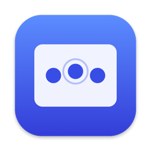

Midpoint
Middle click on your Mac trackpad: a three-finger click or a three-finger tap.
Free and open source · macOS 14 Sonoma or later · Apple silicon and Intel
brew install --cask akhilmadipalli/tap/midpoint
What it does
Midpoint is a small menu bar app that turns three fingers on your trackpad into a middle click. Open links in background tabs, close browser tabs, paste in Terminal, or pan in CAD apps without reaching for a mouse.
- Three-finger clickPress the trackpad with three fingers for a middle click. Hold and drag for a middle-button drag.
- Three-finger tapA light three-finger tap sends a middle click too.
- Lightweight and privateAbout 500 lines of Swift. No dependencies, no network access, no analytics.
Getting started
On first launch, macOS asks for Accessibility access, which Midpoint needs to send middle clicks. Turn it on in System Settings → Privacy & Security → Accessibility.
Midpoint isn't notarized yet, so if you download the DMG, macOS will say it “cannot verify” the app the first time. Click Done, then choose Open Anyway in System Settings → Privacy & Security. Homebrew skips this step.
For gesture conflicts, troubleshooting, and how it works, see the README.